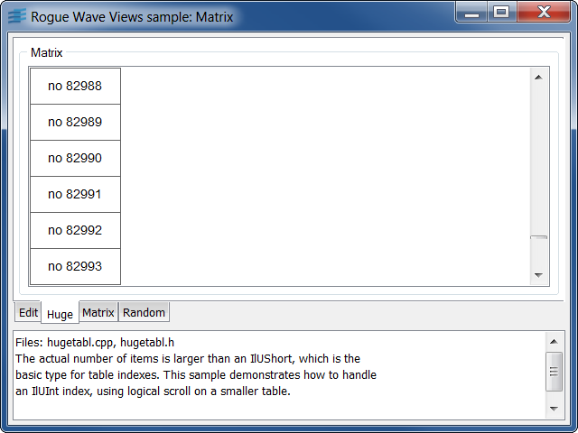

matrixThis sample shows how to subclass the IlvAbstractMatrix class to implement a matrix that has in infinite number of rows.
When trying to reach the last row of the matrix using the scroll bar, new rows are added to the matrix.
IlvAbstractMatrixhugeThis sample shows how to scroll in a large number of data items.
The actual number of items is larger than an IlvUShort, which is the basic type for table indexes. This sample demonstrates how to handle an IlvUInt index, using logical scroll on a smaller table.
IlvAbstractMatrixIlvScrolledGadgetrandomThis sample displays an animated IlvAbstractMatrix of 1000 rows and 3 columns.
The first column shows the row index, from 0 to 999. The second column receives a random integer from 0 to 1000. The third column stores an IlvRectangularGauge that represents this value. Random numbers are modified periodically using a timer. The sample lets you edit a threshold. When the number becomes greater than this threshold the number turns red.
IlvAbstractMatrixIlvTimerIlvRectangularGaugeIlvFontIlvNumberFieldIlvToggleeditThis sample shows how to create a
subclass of the IlvAbstractMatrixItem class. It
also shows how to create specific matrix item editors.
The sample shows a matrix with several rows and 4
columns. The first column contains labels (IlvLabelMatrixItem
class). The second column contains integer values
(IlvIntMatrixItem class). The third column contains float
values (IlvFloatMatrixItem class). The fourth column also contains
float values, but here a subclass of IlvFloatMatrixItem is
used. This subclass allow the user to control the display format of the
float value.
A matrix item editor factory is set on the matrix to control the edition of each cell. Two new editors classes are created : An editor for float value that uses a spinbox, and an editor for integer values that uses a slider.
IlvAbstractMatrixItemIlvMatrixIlvMatrixItemEditorIlvSpinBoxIlvNumberFieldIlvSlider